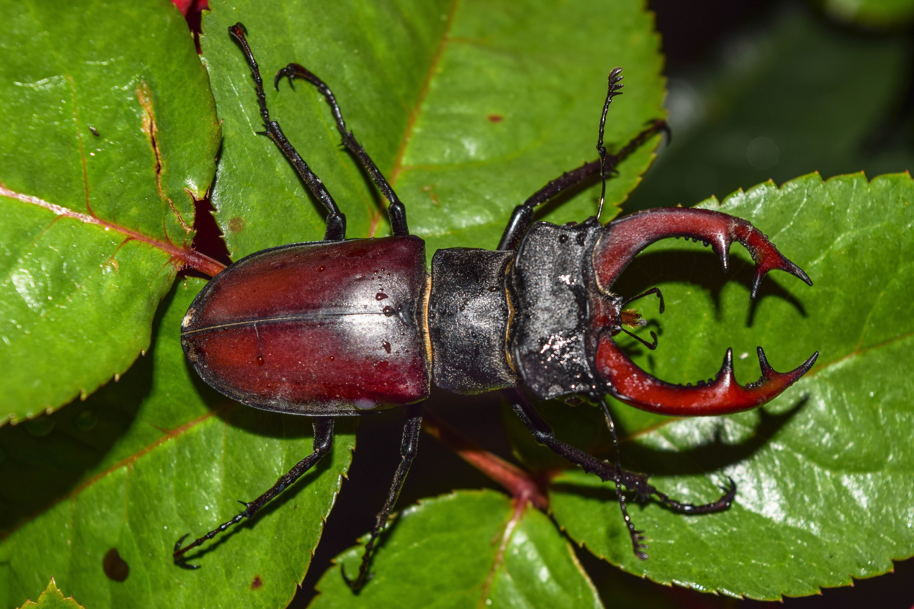

Home Page

Welcome to the wonderful world of insects!
These little creatures, although they are small, have so much to offer to our world. From the tiniest mites, to the most extravagant butterflies and beetles, parasitic wasps, and blood-sucking pests, every single bug fills an important niche in the ecosystems they inhabit.
But why bugs?
Many people are not the fondest of so-called "creepy crawlies", but if given the chance to learn about them, you will learn that these crawlies are anything but creepy.
Most insects live complex lives, whether solitary or as a part of a colony working together. Colonies of leafcutter ants and honeybees are known for their architectual prowess. Both of these colony insects work tirelessly to create the perfect systems to feed their colonies and raise their young, not unlike humans. There are even species of ants who live symbiotically with aphids, keeping the aphids safe in exchange for nourishing honedew, much like human farmers with cattle.
I am hoping this website helps people challenge their preconcieved notions of insects, and gain a greater appreciation for the small things in life.
The importance of parasites
Parasites play an important role of population control in the insect world. Parasitic wasps known as Pepsis have a specialized ovipositor that allows them to pierce the exoskeletons of spiders, who's bodies act as an incubator for their young.
Many species of parasites can also act as natural pesticides, and are better for the environment than harsh chemical pesticides. (source)
While it is true parasites are capable of spreading harmful diseases to humans, this is just an unfortunate byproduct of the ecological niches parasites were made to fill. Parasites deserve much more recognition for the benefits they add to the ecosystem than the scrutiny they deal with on a day to day basis.